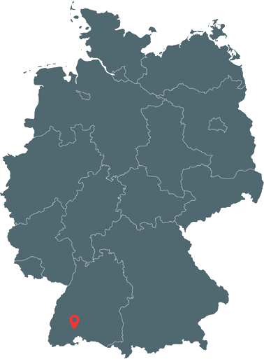
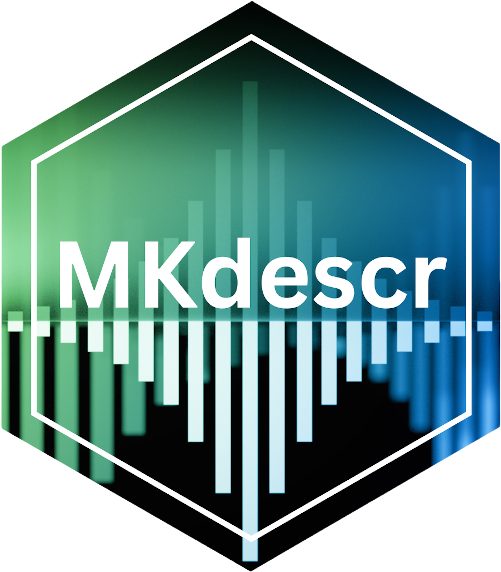
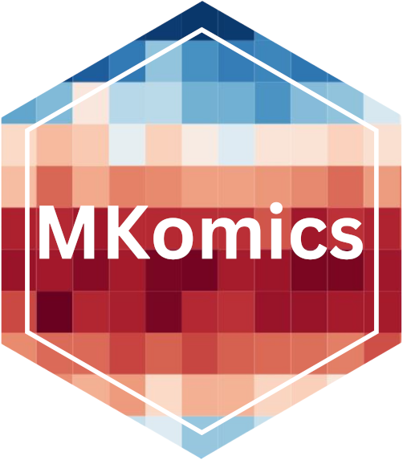
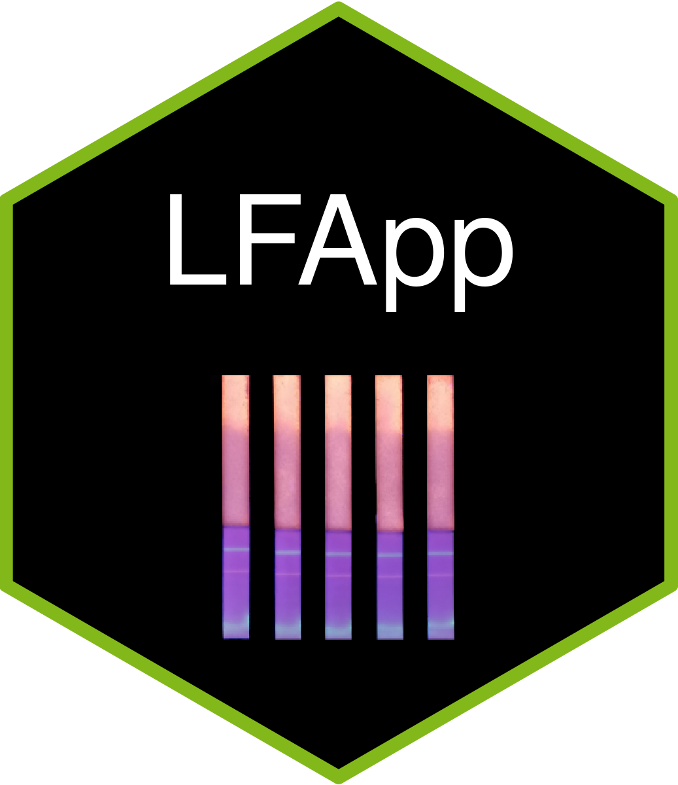

When experiments scale, analysis must too.
Liora Bioinformatics partners with research teams and labs to design custom pipelines, build dependable software, and deliver analysis you can trust — bridging rigorous science and real-world impact.
Our roots lie at Furtwangen University in Germany's Black Forest — part of a high-tech region often called the "Inventors' Belt." Liora grew out of a Data Science for Life Science research group at the Institute of Precision Medicine, where our founders met while tackling real data challenges alongside international scientists.
We founded Liora Bioinformatics to widen that impact beyond academia: combining scientific rigor with innovation and precision, and bringing dependable bioinformatics to the teams who need it.

Free open-source software and toolkits developed by us, supported throughout their lifecycle.
An all-in-one platform to perform and manage decentralized, bacterial surveillance. PhyloTrace brings together a toolkit of analyses — including hashed cgMLST typing and antimicrobial resistance screening — in one intuitive interface.
Comprehensive suite of methods for statistical analysis of clinical data and biomedical experiments.

Functions to compute and visualize robust and standardized descriptive statistics.
Power analysis and sample size calculation for experiments, diagnostic studies, and clinical evaluations.

Toolkit enabling quality control, processing, and evaluation of Omics experiments.

Fast, optimally robust estimators for reliable parameter estimation under model deviations.

Modular application for quantitative image analysis of lateral flow assays.

Intuitive workflow for image-based analysis of microarrays.
From a single analysis to a fully maintained platform, we meet you where your project is.
Stop adapting to generic tools. We craft tailored pipelines that run fast, feel intuitive, and match your lab's unique needs.
Need more than a pipeline? We partner on bioinformatics R&D to design, prototype, and deliver next-gen analysis solutions.
We provide established, open-source bioinformatics tools with full lifecycle support — ready for deployment and maintained by our team.
We transform your raw data into meaningful insight — from statistical models to the analysis of complex Omics data.
We understand your data because we've worked with it ourselves.
Every workflow is built to be transparent, versioned, and repeatable — so results hold up to scrutiny.
We maintain what we build, keeping tools healthy and secure well past the first delivery.
Whether you need a pipeline, a piece of software, or a research partner, we'd like to hear what you're working on.